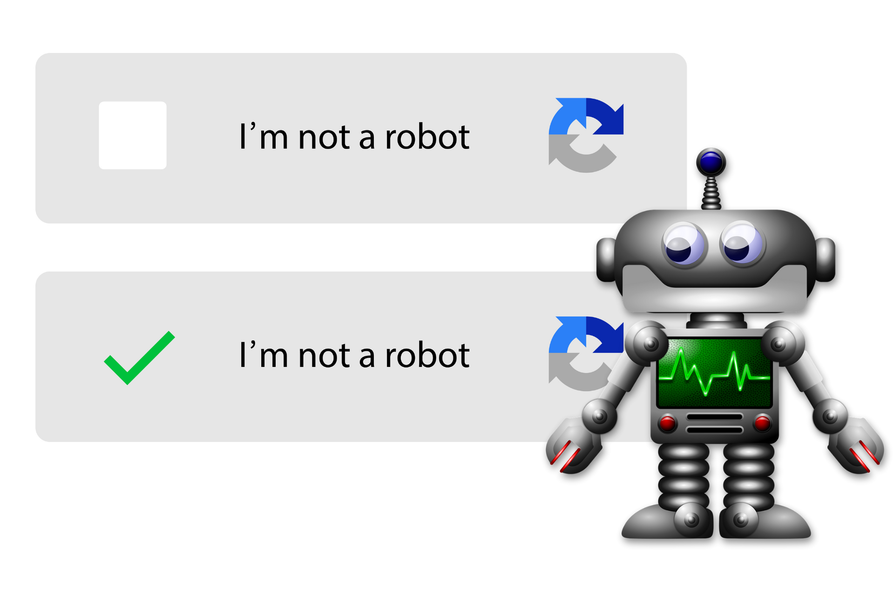
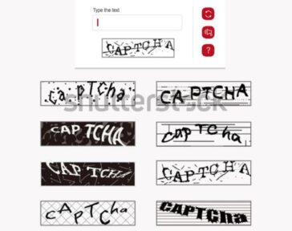
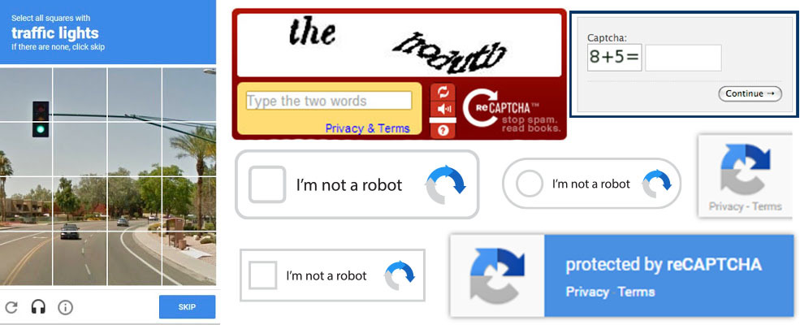

🏴☠️ Comment les hackers et les IA les contournent.
Les CAPTCHA ne sont plus aussi infaillibles qu'auparavant, les avancées technologiques ont permis de les contourner de plusieurs façons :
- L’IA et le Machine Learning : Des modèles d'intelligence artificielle entraînés à reconnaître les schémas des CAPTCHA peuvent les résoudre aussi bien, voire mieux, que les humains. Des réseaux neuronaux spécialisés en reconnaissance d’images arrivent à identifier les lettres déformées et les objets dans des images CAPTCHA avec une précision très élevée.
- Les fermes à CAPTCHA : Dans certains pays, des entreprises emploient des travailleurs humains pour résoudre des CAPTCHA en masse, permettant aux hackers de passer outre les protections des sites web.
- L’analyse des motifs : Les bots avancés peuvent exploiter des algorithmes de reconnaissance de texte et d’image pour identifier et résoudre certains types de CAPTCHA plus rapidement qu’un utilisateur humain moyen.
- Les attaques basées sur les cookies et les sessions : Certains sites ne rafraîchissent pas les CAPTCHA correctement, ce qui permet aux attaquants d’utiliser d’anciens jetons valides pour passer les vérifications sans résoudre de nouveau défi.
🤖 Exemple : Le modèle d'IA Suisse
Une équipe de chercheurs de l’ETH Zurich, une prestigieuse université suisse, a réussi à contourner systématiquement le système reCAPTCHA v2 de Google grâce à un modèle d’intelligence artificielle avancé.Les chercheurs ont utilisé des réseaux neuronaux entraînés sur de vastes ensembles de données pour comprendre et résoudre les défis textuels et visuels proposés par reCAPTCHA.
-
Deux élèment cléfs de leurs systéme :
- Reconnaître et décoder les lettres et chiffres des CAPTCHA textuels même lorsqu’ils sont déformés.
- Identifier et cliquer correctement sur les objets demandés dans les CAPTCHA d’images (ex. : sélectionner toutes les voitures).
Leur système d’IA a atteint un taux de réussite exceptionnellement élevé, surpassant les humains dans certaines catégories.

🚧 Problèmes d’accessibilité
L’un des principaux défauts des CAPTCHA est qu’ils ne sont pas toujours accessibles aux personnes en situation de handicap.
| Type de difficulté | Problèmes rencontrés |
|---|---|
| Difficultés pour les malvoyants | Même avec des alternatives audio, les CAPTCHA ne sont pas toujours adaptés aux utilisateurs ayant une déficience visuelle. L’audio est souvent déformé pour empêcher les bots de le comprendre, mais cela le rend aussi difficilement intelligible pour un humain. |
| Problèmes pour les personnes dyslexiques | Les CAPTCHA textuels peuvent être compliqués à lire pour les personnes souffrant de dyslexie, surtout lorsqu’ils contiennent des lettres et des chiffres mélangés dans une disposition confuse.. |
| Barrières pour les personnes ayant des troubles moteurs | Certains CAPTCHA exigent une interaction précise avec la souris ou l’écran tactile (cliquer sur des images, déplacer un puzzle, etc.), ce qui peut être un obstacle pour les personnes atteintes de troubles moteurs. |
| Alternatives insuffisantes | Bien que des solutions comme Google reCAPTCHA tentent d’identifier un utilisateur sans qu’il ait besoin d’interagir, elles ne fonctionnent pas toujours de manière fluide, forçant certains utilisateurs à résoudre un CAPTCHA classique malgré leur handicap. |
❌ Des Captcha trop difficile
Les CAPTCHA ne se contentent pas de bloquer les robots, ils exaspèrent aussi les utilisateurs humains, ce qui peut nuire à l’expérience utilisateur et faire fuir des clients potentiels ou personnes souhaitant juste récolter des informations.
Les tests textuels sont parfois tellement déformés ou flous qu’il est difficile même pour un humain de les déchiffrer

Certains systèmes demandent de résoudre plusieurs défis successifs (ex: "Sélectionnez tous les feux de circulation", puis "Sélectionnez tous les bus"), ce qui peut être frustrant enchainant avec de nouveaux capcha.

Nous retrouvons aussi d'autre aspect qui peuvent énerver les utilisateurs avec des tests biaisés ou des erreurs peuvent se produire si l’image est mal interprétée par l’utilisateur ou si des objets sont partiellement visibles. Un test demandant de cliquer sur tous les vélos peut prêter à confusion si un petit bout de roue dépasse à peine d’un coin de l’image ou encore ce qui peut constituée un frein au parcours de l'utilisateur : Lorsqu’un CAPTCHA est trop complexe il ralentit le processus (inscription,connexion ou de validation d’achat), poussant parfois les utilisateurs à abandonner complètement leur action.